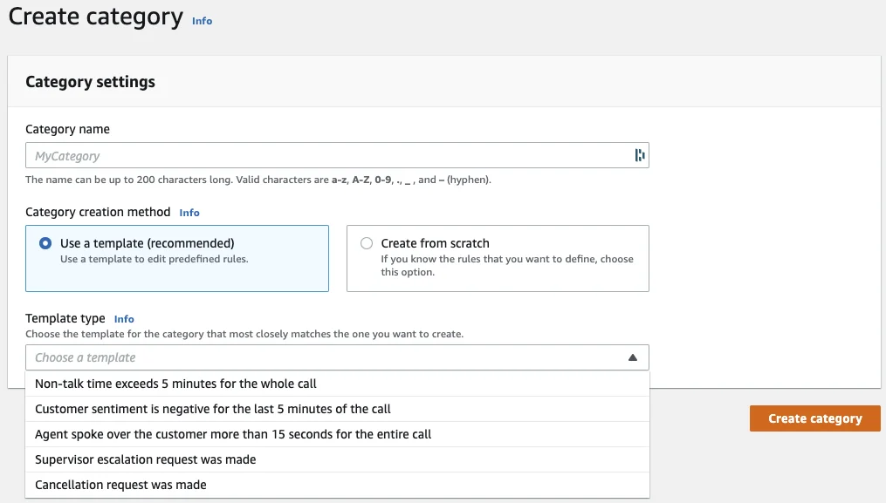
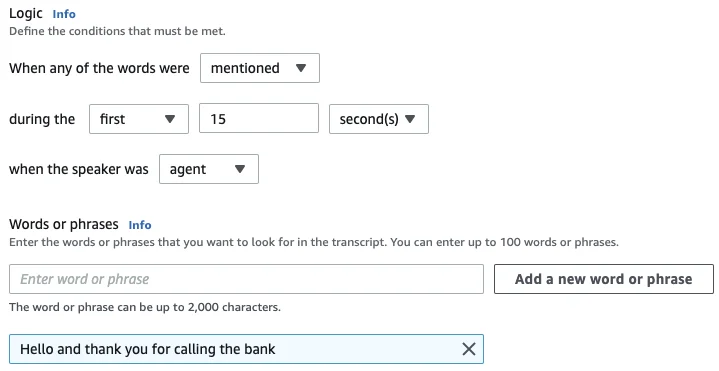
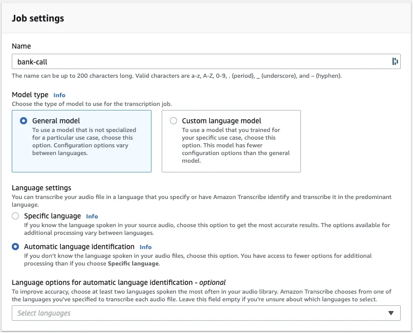
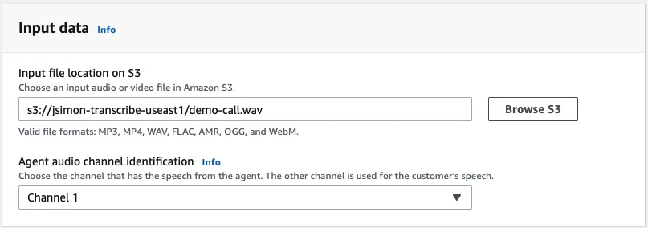
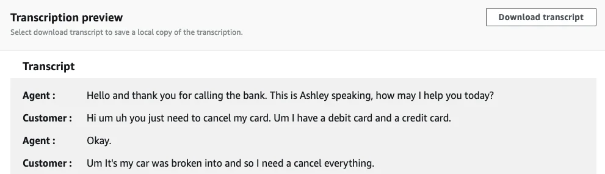
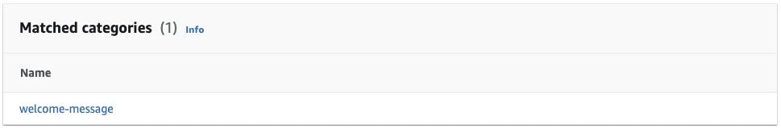

Published: 2021-08-04
Originally published at https://aws.amazon.com/blogs/aws/extract-insights-from-customer-conversations-with-amazon-transcribe-call-analytics/
In 2017, we launched Amazon Transcribe , an automatic speech recognition (ASR) service that makes it easy to add speech-to-text capabilities to any application. Today, I’m very happy to announce the availability of Amazon Transcribe Call Analytics , a new feature that lets you easily extract valuable insights from customer conversations with a single API call.
Each discussion with potential or existing customers is an opportunity to learn about their needs and expectations. For example, it’s important for customer service teams to figure out the main reasons why customers are calling them, and measure customer satisfaction during these calls. Likewise, salespeople try to gauge customer interest, and their reaction to a particular sales pitch.
Thus, many customers and partners would like to add call analytics capabilities in different applications, regardless of their contact center provider. They often need to analyze more than phone calls, for example web-based audio and video calls. So far, they’ve typically done this by stitching AI services and dedicated ML models together, and they’ve asked us for a simpler solution.
We got to work and built Amazon Transcribe Call Analytics , a new addition to Transcribe and a key enhancement to AWS Contact Center Intelligence . If you can’t wait to try it, feel free to jump now to the AWS console . If you’d like to learn more, read on!
Introducing Amazon Transcribe Call Analytics
Based on ASR implemented in
Transcribe
, Transcribe Call Analytics adds natural language processing (NLP) capabilities specifically trained on customer calls, and optimized to provide highly accurate call transcripts and actionable insights. With a simple API call, developers can now easily add call analytics to any application, and extract customer insights from conversations without having to build AI pipelines and train custom ML models.
Key features of Transcribe Call Analytics include:
For example, you can create rules to flag calls where customers interrupt the agent, exhibit negative sentiment, and say “I want to speak with the manager”. These calls certainly did not go well, and are worth analyzing in detail! You can also look for calls where agents don’t use pre-defined greetings (“Welcome to ACME Support, how can I help you today?”) within the first 15 seconds, to measure script compliance and help supervisors identify agent coaching opportunities. Another popular scenario is to create rules that flag mentions of your specific products and services (“Your ACME Turbo 2000 vacuum cleaner isn’t working like it should”), in order to pick up any emerging trends you’d need to be aware of.
Last but not least, you can further process the text transcript with other AI services such as Amazon Translate , or with custom NLP models built with Amazon SageMaker .
Now, let’s do a quick demo.
Extracting Insights with Amazon Transcribe Call Analytics
Here’s a fictitious support call, where a lady calls her bank to report that she’s lost her credit and debit cards. The sound file is a stereo WAV file (16-bit, 8KHz).
Transcribe Call Analytics requires that the agent and the customer are recorded in their own channel. We’ll also need to tell which is the agent channel. In a stereo file, the left channel is usually the first channel (channel #0), and the right channel is the second one (channel #1). This is the case for this call.
If you’re not sure which is which, you can easily use the versatile
ffmpeg
open source tool to extract each channel to a separate audio file.
$ ffmpeg -i demo-call.wav -map_channel 0.0.0 channel0.wav -map_channel 0.0.1 channel1.wav
You can use the same technique to extract audio channels from other file types, such as video files, and recombine them to a stereo audio file. You’ll find more information in the
ffmpeg
documentation
.
Now that I’m sure that the agent is in channel #1, I use the AWS CLI to upload the audio file to an S3 bucket.
$ aws s3 cp launch-call.wav s3://jsimon-transcribe-useast1/demo-call.wav --region us-east-1
Opening the Transcribe Call Analytics console , I see that call category templates are available.

I decide to create one for supervisor escalations. Then, with a couple of clicks, I create a custom call category named
welcome-message
, to check if the agent starts the call with an appropriate welcome. I could add several phrases to check for if needed. We recommend that you use short sentences to minimize the chance of filler words popping up (‘hmm’, ‘err’, and so on).

Then, I create a call analytics job using the general model available in Transcribe. I also enable automatic language detection.

Then, I define the location of the audio file in S3, flagging channel #1 as the agent channel.

I decide to store the transcript in the default S3 bucket created by Transcribe in my account. I could also use my own bucket if needed. Then, I pick an AWS Identity and Access Management (IAM) role with sufficient permissions, and I launch the job.
A minute later or so, the job is complete. The console contains a preview of the text transcript, as well as a link to the full JSON transcript.

As the agent used the proper welcome sentence in the first 15 seconds, the call is tagged with the category I created earlier.

Downloading the JSON transcript, each sentence in the conversation is enriched with metadata on per-word loudness, measured on a 0-100 range with 100 being extremely loud. Here’s the first sentence:
"BeginOffsetMillis":440,"EndOffsetMillis":4960,
"Sentiment":"NEUTRAL",
"ParticipantRole":"AGENT",
"LoudnessScores":[78.68,80.4,81.91,78.95,82.34],
"Content":"Hello and thank you for calling the bank. This is Ashley speaking, how may I help you today?"
Looking at the next sentence, I see that Transcribe Call Analytics automatically detected what the customer issue is. The corresponding text is in bold:
"Content": "Hi um uh you just need to
cancel my card
. Um I have a debit card and a credit card.",
"IssuesDetected":
[
{
"UnredactedCharacterOffsets":
{
"Begin": 26,
"End": 40
}}. . .
At the end of the transcript, I see global call statistics (duration, talk time, words per minute, matched categories). Transcribe also gives me overall sentiment information, meaured from -5 (extremely negative) to +5 (extremely positive). I also get a a breakdown in four quarters.
"Sentiment":{"OverallSentiment":{"AGENT":2.6,"CUSTOMER":0.2},
"SentimentByPeriod":{"QUARTER":
{"AGENT":[
{"Score":1.9,"BeginOffsetMillis":0,"EndOffsetMillis":68457},
{"Score":-0.7,"BeginOffsetMillis":68457,"EndOffsetMillis":136915},
{"Score":5.0,"BeginOffsetMillis":136915,"EndOffsetMillis":205372},
{"Score":3.0,"BeginOffsetMillis":205372,"EndOffsetMillis":273830}],
"CUSTOMER":[
{"Score":-1.7,"BeginOffsetMillis":0,"EndOffsetMillis":68165},
{"Score":0.0,"BeginOffsetMillis":68165,"EndOffsetMillis":136330},
{"Score":0.0,"BeginOffsetMillis":136330,"EndOffsetMillis":204495},
{"Score":2.1,"BeginOffsetMillis":204495,"EndOffsetMillis":272660}]}}}
We can see that the customer started the call with negative sentiment, moving quickly to neutral sentiment, and ending the call with positive sentiment. This is a good sign that the call was handled satisfactorily, and that the customer problem was solved.
If you’d like to convert the transcript to a Word document with additional visualizations, my colleague Andrew Kane has built a nice tool and made it available on Github . Here’s a sample report produced by his tool.
AWS Customers and Partners Are Using Amazon Transcribe Call Analytics
Ben Rigby , the SVP, Global Head of Product & Engineering, Artificial Intelligence, Automation, and Workforce at Talkdesk told us, “ Our customers are processing millions of customer service calls in their contact centers a year and have a critical need to extract actionable conversation insights to ensure positive business outcomes. As an AWS Contact Center Intelligence partner, we further enhanced our call transcription capabilities with Amazon Transcribe. With the launch of Amazon Transcribe Call Analytics, we’re excited to add even more AI capabilities to our Speech Analytics and QM Assist products. These deeper insights can provide agents and supervisors with the data they need to improve the speed and quality of their customer service while boosting workforce productivity. ”
Praphul Kumar , the Chief Product Officer of SuccessKPI adds, “ Amazon Transcribe Call Analytics API enables us to add ML-based capabilities to our platform faster and at a lower cost. This new API removes the need to integrate multiple AI services together and develop custom machine learning models in certain areas. With Transcribe Call Analytics, we will be able to provide conversation insights such as sentiment, non-talk time, and call categories to gauge agent performance. This helps to drive better call outcomes, reduce agent turnover, uncover agent coaching opportunities, and measure call script compliance. Combining AWS services into SuccessKPI’s experience analytics platform was a no brainer. We are looking forward to bringing this valuable capability into the hands of large enterprises and government agencies. ”
Getting Started
A single API call is all it takes to extract rich insights from your customer conversations. You can start using
Amazon Transcribe Call Analytics
today in the following regions:
Please give this new feature a try in the AWS console , and let us know what you think. We always look forward to your feedback! You can send it through your usual AWS Support contacts or post it on the AWS Forum for Amazon Transcribe.
One last thing: if you’re looking for an easy to use omnichannel cloud contact center, you should definitely take a look at Amazon Connect and its ML powered analytics, Contact Lens .
- Julien